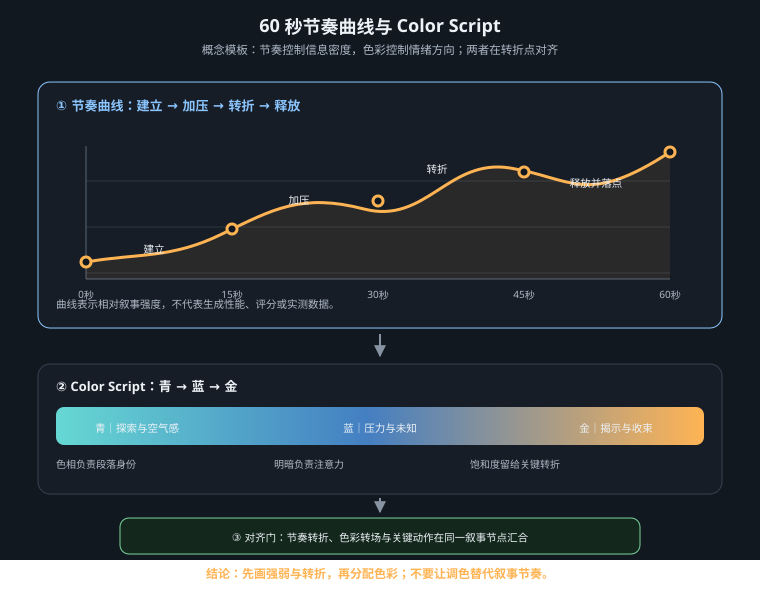

把“何时变化”与“变成什么颜色”写进同一张施工图，让时间、运动和色彩共同交付叙事

视频提示词里的 slow、suddenly 和 cinematic pacing 只是感受词，不足以安排事件。可执行的时间设计至少分四层：故事时间是情节中实际过去多久；银幕时间是观众观看这一段多久；主观时间是角色感受到的快慢；生成时长则是平台本次任务允许输出的秒数或帧数。前三层服务叙事，最后一层服从产品规格，不能混为一谈。
| 时间层 | 设计问题 | 可见手段 | 验收证据 |
|---|---|---|---|
| 故事时间 | 事件跨越一秒、一天还是多年？ | 环境状态、光线、服装、空间变化 | 不靠字幕也能感到时间跨度 |
| 银幕时间 | 信息要在画面中保留多久？ | 镜长、切点、停顿、重复 | 关键动作与结果都能被读到 |
| 主观时间 | 角色觉得时间加速还是凝固？ | 慢动作、声画错位、运动密度、景深 | 速度变化有明确心理原因 |
| 生成时长 | 当前平台实际接受什么规格？ | 时长档、帧率、续写、剪辑拼接 | 提交参数与平台界面一致 |
时间码是剪辑计划，不是模型承诺。例如脚本写“00:03.2 灯光转红”，表示期望事件在成片时间线的位置；平台若只能生成固定时长素材，应先用相对阶段描述生成，再在剪辑中截取、变速或拼接。不要把“生成 5 秒”自动等同于“成片可用 5 秒”，首尾漂移、动作迟发与转场余量都可能造成损耗。
节奏由镜头长度、主体速度、相机速度、构图变化、信息量、声音密度和明暗反差共同决定。长镜头也可以紧张：人物几乎不动，但警报灯频率加快、背景门逐步关闭；短镜头也可以安静：三个低运动量静物以柔和叠化连接。因此，“两秒一切”或“高潮必须出现在某个百分比”只能是项目假设，不能当作普遍规律。
强度
▲ ╭── C 高潮：结果显现
│ ╭──────╯
│ ╭─────────╯ B 转折：变化加速
│ A 建立╯ ╲ D 余韵：保留后果
└────────────────────────────────────────► 叙事进程
0% 约35% 约75% 100%
百分比只用于沟通事件顺序，实际位置应由素材可读性、音乐结构、渠道和试剪决定。为每个节点同时写进入条件与离开条件：观众看见什么之后才能转折？哪个动作完成后才允许切走？这样曲线才可验收。
| 节点 | 运动与剪辑 | 声音 | 画面任务 |
|---|---|---|---|
| A 建立 | 低速、稳定机位、较少切换 | 稀疏环境声 | 交代人物、空间与常态 |
| B 转折 | 一次清楚的速度或方向改变 | 新声源进入或短暂抽空 | 让因果改变可见 |
| C 高潮 | 变化密度最高，但主体动作仍单一 | 峰值或有意静默 | 交付全段最重要的信息 |
| D 余韵 | 减速、停留或拉远 | 尾音与空间混响 | 展示后果，不再引入新设定 |
色彩脚本不是给每个镜头挑一套漂亮滤镜，而是把色相、明度、饱和度的变化绑定到叙事节点。色相回答世界偏向哪一族颜色；明度控制可见性、压迫与释放；饱和度控制情绪能量和注意力。三项不必同时猛变：若转折既换色相、又暴增饱和度、又压暗明度，观众可能只感到突兀，模型也更容易产生材质和身份漂移。
| 节点 | 叙事事件 | 色相 Hue | 明度 Value | 饱和度 Saturation | 绑定依据 |
|---|---|---|---|---|---|
| A 建立 | 角色困在停电舱室 | 青灰主导 | 低，脸部保留轮廓 | 低 | 停滞与信息受限 |
| B 转折 | 角色触碰应急开关 | 青灰中出现琥珀点光 | 局部抬升 | 强调色中等 | 暖光必须来自开关 |
| C 高潮 | 舱门打开，晨光涌入 | 琥珀扩展，冷暖并存 | 明显抬升但保留高光细节 | 适度提高 | 事件结果改变空间光源 |
| D 余韵 | 角色走向出口 | 暖中性主导，远处留少量青 | 稳定在中高位 | 略回落 | 希望成立，但保留来处 |
每次换色都要回答“谁让颜色变化”：门外晨光、警报灯、火焰或屏幕可以成为因果源；没有光源或环境依据的全局变色更像套滤镜。为保持连续性，应固定角色服装、本征色、材质与主光方向，只允许环境光比例沿节点变化。
下面是一条单镜头模板，事件使用相对阶段，避免把剪辑时间码误当作平台保证。提交时仅把末尾参数替换为目标平台当前可选规格。
Single continuous cinematic shot inside a powerless spacecraft airlock. START STATE: a lone engineer stands in the left third, facing a sealed door on screen right. Her charcoal utility suit, short dark hair, facial identity, door geometry, and all prop positions remain consistent throughout. The cabin is dim, low-value desaturated cyan-gray, lit only by a weak cool ceiling strip. NARRATIVE ACTION AND TIMING: during the early phase, hold the stillness long enough to establish isolation; only subtle breathing and faint drifting dust. In the middle phase, she presses one amber emergency switch once. The switch is the causal source of the color change. After the press, the door unlocks and opens at a controlled, even speed. During the late phase, warm dawn light enters through the widening gap and gradually spreads across the floor and the right edge of her face. In the final phase, she takes one small step toward the opening, then holds the resolved end state for a clean edit. CAMERA: one restrained slow dolly-in, constant speed, eye-level, 50mm lens feel; no pan, no orbit, no zoom, no handheld shake, no cut. COLOR SCRIPT: begin with cool cyan-gray hue, low value and low saturation; at the switch press introduce one localized medium-saturation amber accent; as the door opens, raise environmental value gradually and expand amber warmth while keeping cool cyan in the cabin shadows; finish in a warm-neutral, moderately saturated state with preserved highlight detail. No instant global filter change. PHYSICS: dawn light must originate only from outside the door; reflections and shadows respond progressively to the opening width; dust motion remains subtle. END STATE: door fully open, engineer still recognizable and facing screen right, warm exterior ahead, cool cabin behind, stable final hold. AVOID: identity drift, costume redesign, extra people, extra fingers, door warping, flicker, random light sources, sudden exposure jump, oversaturated orange, crushed blacks, blown highlights, text, subtitles, logos. DELIVERY: [supported duration], [supported aspect ratio], [supported resolution], [supported frame rate], one continuous shot, no audio unless the platform explicitly supports and the project requires it.
| 项目字段 | 创作层写法 | 提交前核对 |
|---|---|---|
| 时长 | 事件相对阶段 + 独立剪辑时间码 | 平台可选秒数、续写能力、计费单位 |
| 帧率 | 动作清晰度与慢放需求 | 是否可选、是否原生、下载文件实际帧率 |
| 画幅 / 分辨率 | 主体位置与字幕安全区 | 支持档位、裁切方式、渠道交付规格 |
| 控制输入 | 首帧、尾帧、角色与场景参考 | 参考图数量、权重、版权与内容政策 |
| 运动控制 | 单一主运动、速度、方向、终点 | 是否支持镜头控制、关键帧或仅文本 |
| 负面约束 | 只列高风险失败项 | 平台是否有独立负面词栏及长度限制 |
不同模型、版本、地区与套餐支持的时长和控制项可能变化，本页不把某个固定秒数、帧率或参数值宣称为通用最佳值。制作表中的 00:00–00:08 可以是八秒成片的设计示例，但只有平台确实提供八秒档时，才应把它作为单次生成参数；否则应改写为相对阶段并通过剪辑实现。
| 症状 | 常见原因 | 优先修复 |
|---|---|---|
| 动作全部挤在开头 | 只有动作清单，没有先后与停留 | 改写 early / middle / late，并给尾态留 hold |
| 中段拖沓 | 信息、运动与声音密度都不变 | 增加一次有因果的转折，而非盲目加速 |
| 颜色突然“套滤镜” | 没有可见光源，三维色彩同时跳变 | 指定颜色来源，分阶段改变明度与色相 |
| 人物随暖光变装 | 把本征色与环境光混写 | 固定身份、服装和材质，只改光照贡献 |
| 高潮更亮却不更强 | 只推曝光，没有事件或构图变化 | 先强化结果的可见性，再调整明度 |
| 时间码与成片错位 | 把生成时长当作可用镜长 | 以实得素材试剪，重建切点并保留余量 |
| 各镜都漂亮但无法相接 | 每镜独立调色，尾态未定义 | 并排审核相邻首尾帧、方向与色彩接力 |
最终交付物不是一条更长的提示词，而是一套彼此对齐的文件：节奏曲线规定变化密度，色彩脚本规定情绪弧光，镜头卡规定动作因果，平台参数规定本次生成边界。四者分层记录、联合验收，才能让模型的时间变化真正服务故事。